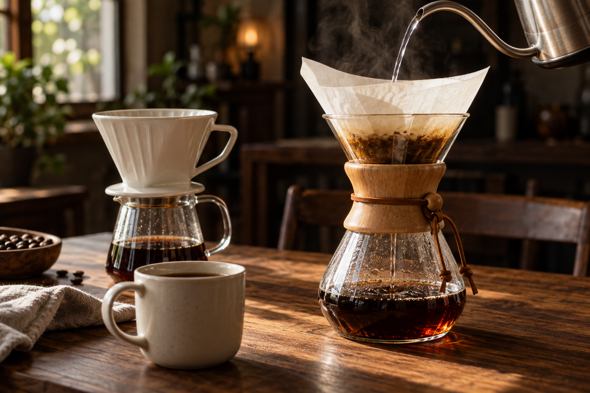
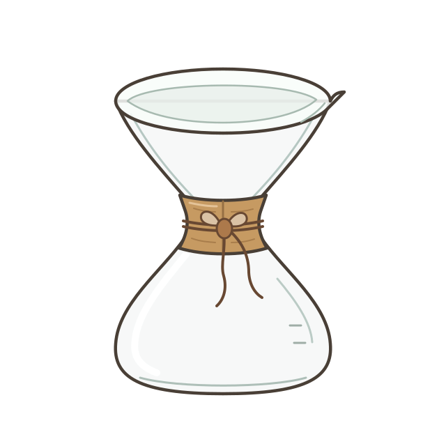
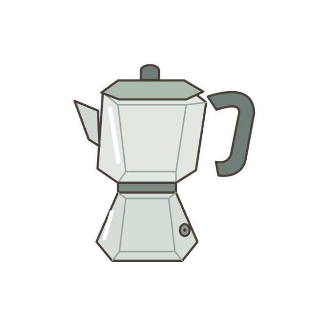
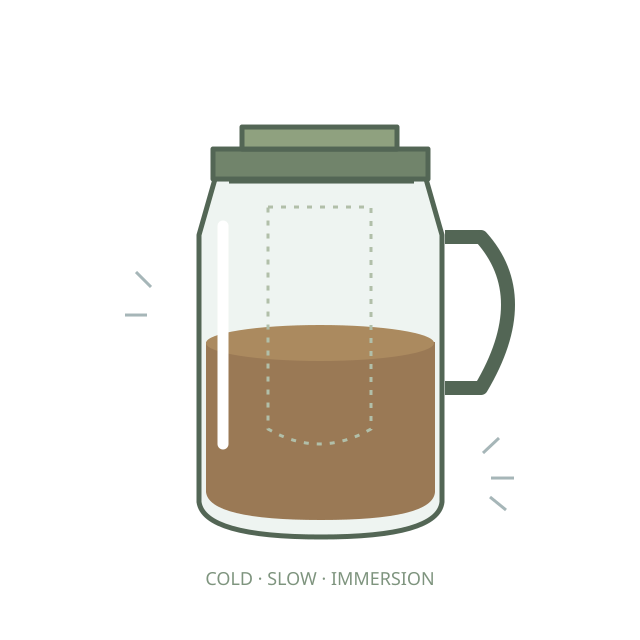
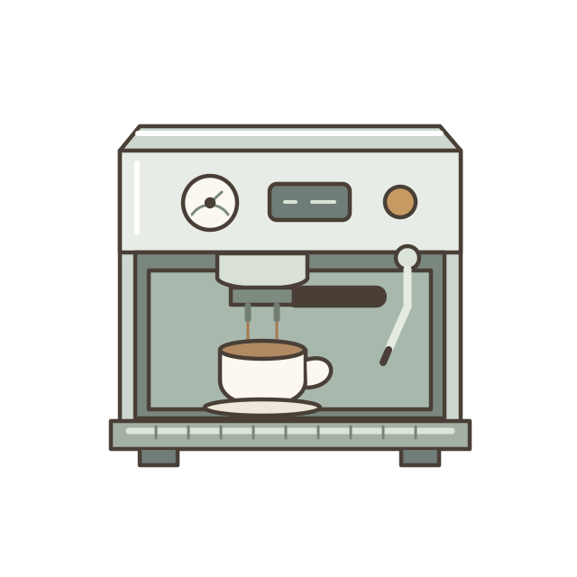
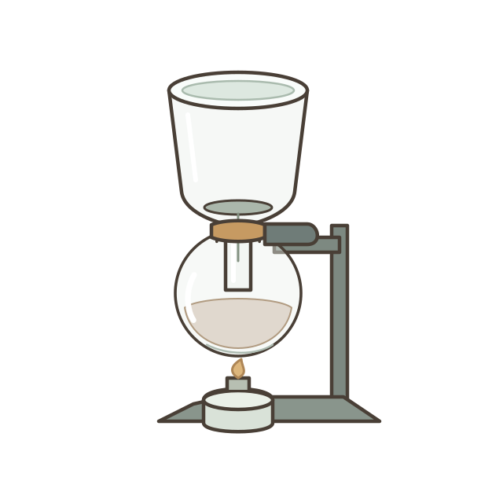
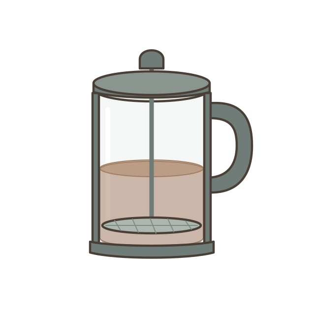

给每一位刚开始的咖啡爱好者
好咖啡，
从你的第一杯
开始。
不用记住所有术语，也不必一步到位。
认识一点，动手试试。
让一杯好咖啡，慢慢成为你的日常。
每天留一点时间，给自己，也给咖啡。

THE JOY OF MAKING01 — POUR OVER
把日子，冲得慢一点。BREW SLOW. FEEL MORE.
一杯 · 一次 · 小小进步MADE BY YOU
YOUR COFFEE JOURNEY从零开始，也能冲得很好。
01看懂一点把复杂的知识，讲简单
02亲手一杯跟着指引，一步步来
03找到风味记录感受，慢慢调整
THE BASICS / 冲煮课堂
先认识，再开始。
不急着变成专家。
从独立课堂开始，把动作和原理一起看懂。
MAKE IT YOURSELF / 亲手冲煮
把器具，交到你手里。
拖豆、研磨、润纸、绕圈注水。
基础跟着手势学，进阶自由配一杯。

01 / THE CLASSIC POUR OVER
Melitta 经典，从这一杯开始。
扇形滤纸，梯形滤杯与独立分享壶。
15g 粉 · 225g 水 · 30 秒闷蒸参考

02 / THE GLASS HOURGLASS
Chemex 给清澈，留一点时间。
专用厚滤纸，一体式沙漏玻璃壶。
15g 粉 · 240g 水 · 45 秒闷蒸参考
A DIFFERENT WAY TO BREW / 更多冲煮方式
从滤杯出发，去认识更多可能。
五种器具新加入：先看原理，再动手练习，也能改参数做对照。

MOKA POT摩卡壶
加水、装粉、拧合，观察咖啡升起。
认识器具，动手跟练 ↗
COLD BREW浸泡式冷萃
调好比例，让冷水与时间完成浸泡。
认识器具，动手跟练 ↗
ESPRESSO意式浓缩
布粉压粉，亲手决定何时停止萃取。
认识器具，动手跟练 ↗
SIPHON虹吸壶
看水升到上壶，再让咖啡回流。
认识器具，动手跟练 ↗
FRENCH PRESS法压壶
浸泡之后，握住压杆缓缓下压。
认识器具，动手跟练 ↗↗ 拖动拿起↻ 转柄研磨⌁ 移动壶嘴注水◌ 根据冲法，看见不同结果
A LITTLE EXPERIMENT / 参数实验室
动一点点，风味就不一样。
拖动参数，认识调整的方向。
下次冲煮，试着只改一个变量。
你的冲煮配方
一小杯 · 10g分享杯 · 30g
更浓郁更轻盈
85°C98°C
研磨程度
YOUR RECIPE / 你的配方
225g 建议注水量
浓郁醇厚
清爽轻盈
平衡，是一个不错的开始。
中细研磨与适中的水温，适合作为中度烘焙的第一杯配方。先尝一尝，再决定下一步。
小小观察
粉水比影响浓淡；水温和研磨影响萃取。这些是调整方向，实际风味还取决于豆子、水质与注水方式。
YOUR BREW JOURNAL / 咖啡手记